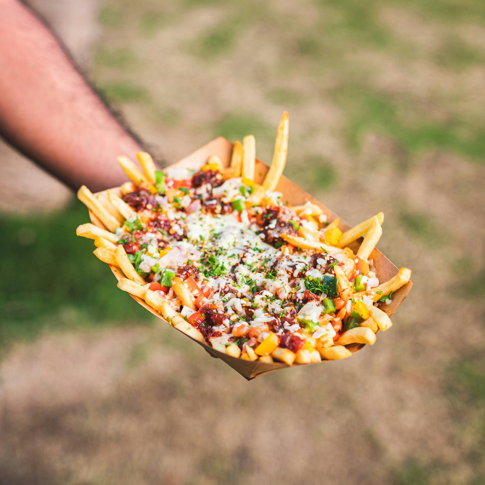

Smash Burger Recipe

Back to Home
Description
Loaded cheese fries are a delectable comfort food that transforms crispy French fries into a hearty dish. Typically, they are topped with melted shredded cheddar cheese and crispy bacon, then broiled until the cheese is bubbly and golden. To enhance the flavor, fresh toppings such as sliced green onions, diced tomatoes, or pickled jalapeños can be added, along with a drizzle of sour cream or ranch dressing. This indulgent dish is perfect for sharing at gatherings, game days, or as a satisfying snack.
Ingredients
- Fries
- Shredded chedder and mozeralla cheese
- Turkey bacon bits
- Ground beef
- Diced tomatoes and jalapeños
Instructions
- Preheat your oven to 425°F (220°C).
- Make your fries how to your prefrence (deep fry, air fry or bakes)
- While the fries are cooking, cook the ground beef in a skillet over medium heat until browned. Season with salt and pepper to taste.
- Once the fries are done, remove them from the oven and spread them out on a large baking sheet.
- Sprinkle a generous amount of shredded cheddar and mozzarella cheese over the fries.
- Add the cooked ground beef and turkey bacon bits evenly over the cheese.
- Return the loaded fries to the oven and broil for 2-3 minutes, or until the cheese is melted and bubbly.
- Remove from the oven and top with diced tomatoes, jalapeños, and any other desired toppings.
- Drizzle with sour cream or ranch dressing if desired.
- Serve immediately and enjoy your loaded cheese fries!